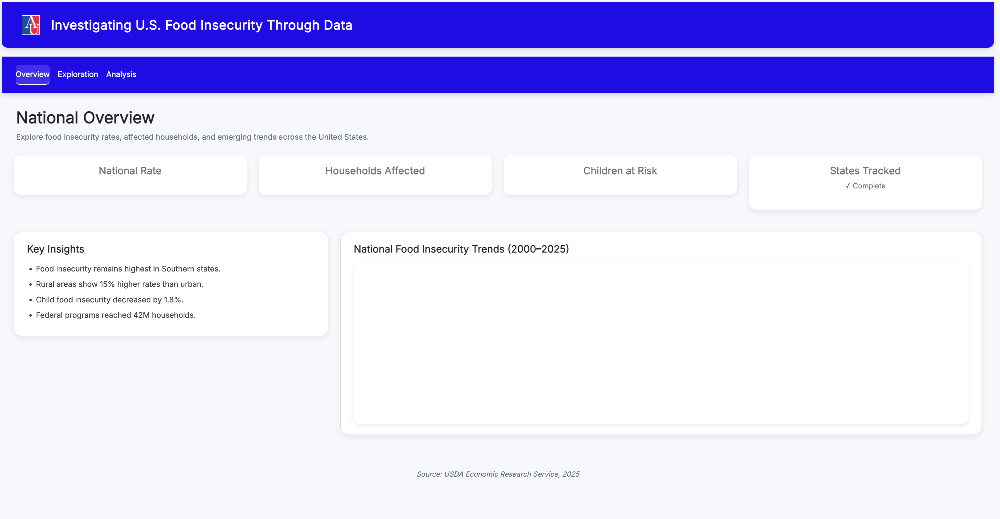

Investigating patterns, disparities, and socioeconomic drivers of food insecurity across 3,100+ U.S. counties — 15 years of longitudinal data, built for policymakers, researchers, and practitioners.

From raw data to causal inference — a fully integrated analytics engine
The platform is augmented by Gemini 2.5 Flash with a secure Python code execution sandbox. It doesn't guess — it writes, tests, and executes Pandas queries directly against the live longitudinal dataframe to mathematically solve plain-English inquiries.
Pivots from descriptive to prescriptive analytics. Uses Difference-in-Differences modeling to isolate the true causal effect of hypothetical policy shocks against controlled baseline groups — proving impact rather than correlation.
K-Means augmented with GPS coordinates to force geographic contiguity. Tracks regional flow shifts using Sankey matrices.
SARIMAX modeling for temporal trend analysis, pre/post COVID impact assessment, and county-level food insecurity forecasts.
Isolation Forests autonomously scan all 3,142 counties to flag severe multivariate anomalies hidden within the economic matrix.
Hover the navigation tabs or click below to preview each module
A rigorous, multi-method analytical framework
Public, de-identified, county-level data — no individual records
Primary dataset providing county-level food insecurity rates, cost per meal, child food insecurity, budget shortfalls, and SNAP participation rates for 3,100+ U.S. counties over 15 years.
Secondary dataset providing county-level demographic characteristics, socioeconomic indicators, educational attainment, income distribution, and employment statistics aligned with ACS 5-year windows.